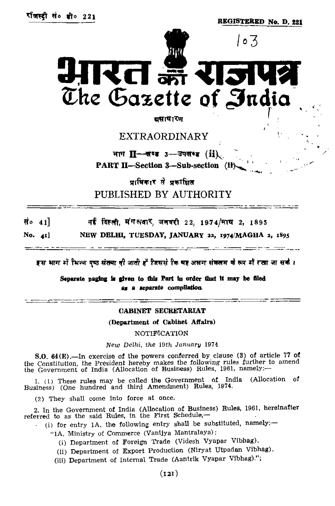
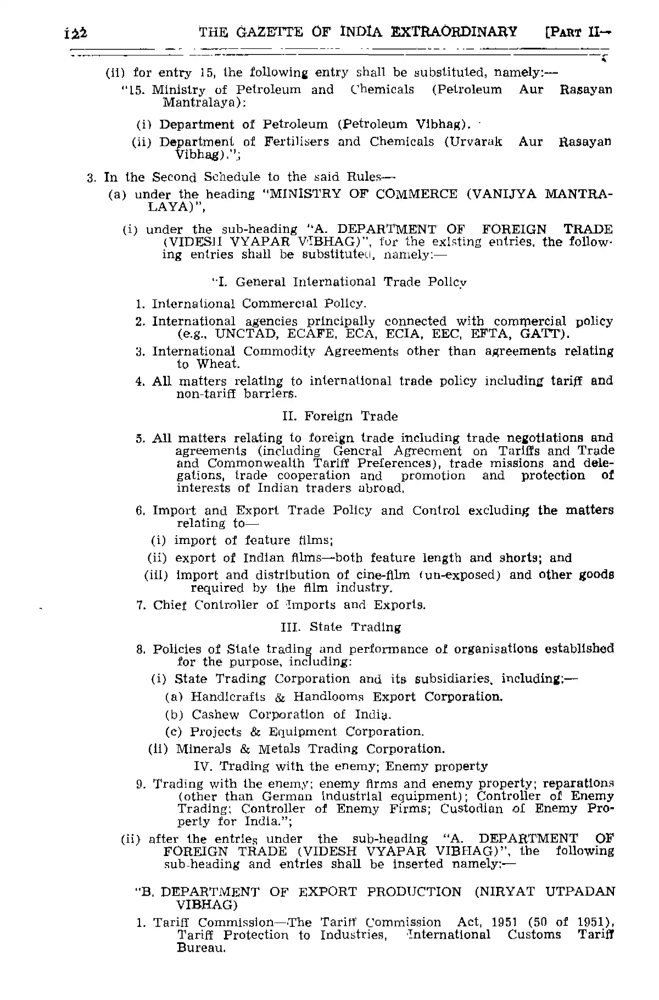
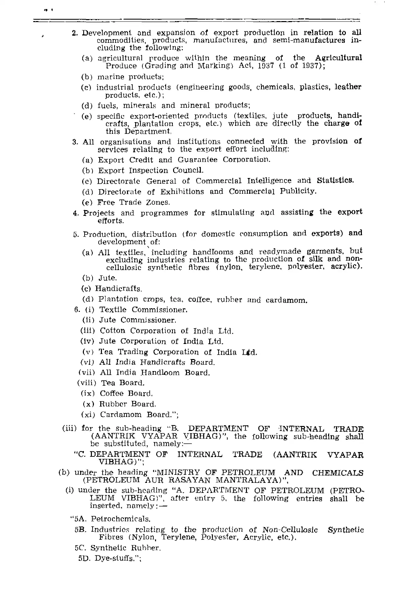
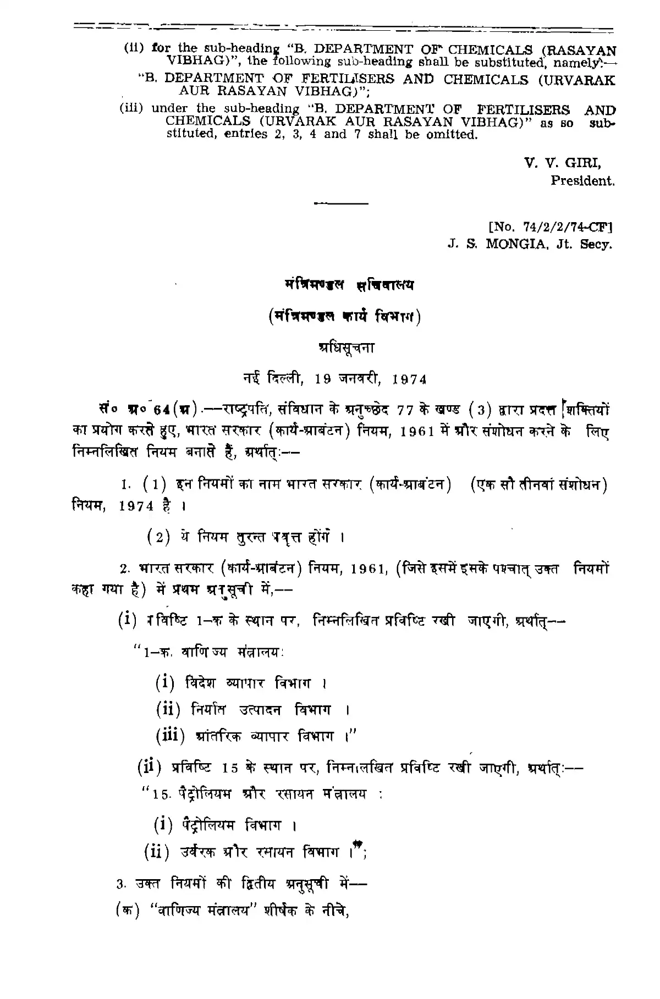
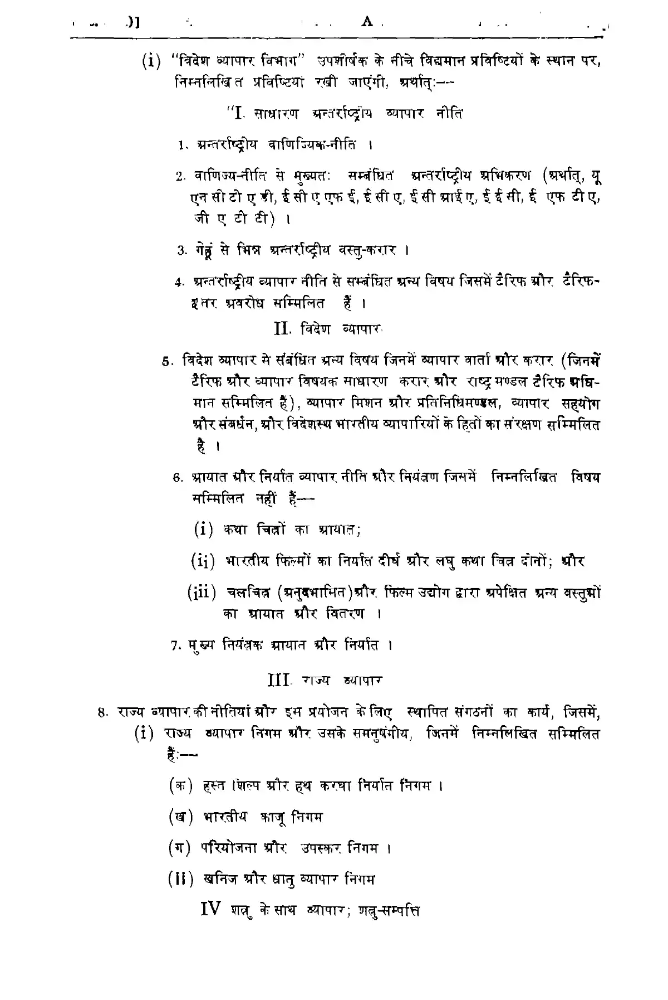
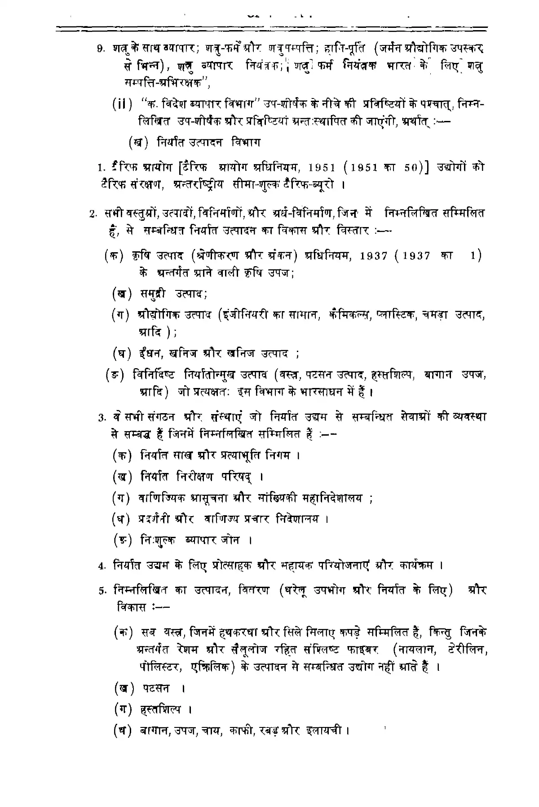
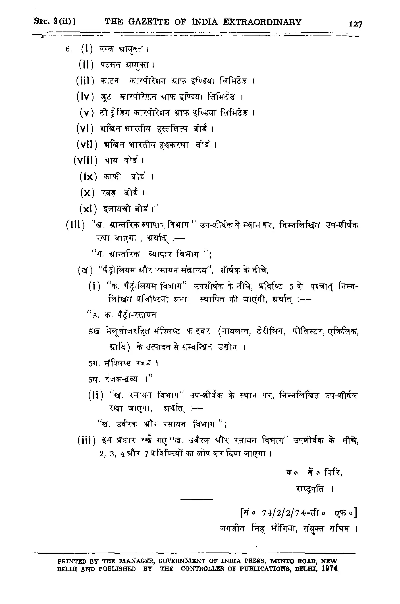

Amendment #103 (S.O. 64(E), 1974)
8 changes: 2 to the First Schedule, 6 to the Second Schedule. 8 applied
The order, page by page
Page 1 of 8

1Schedule 1 › entry 1A
- 1A. Ministry of Commerce
- i. Department of Foreign Trade
- ii. Department of Export Production
- iii. Department of Internal Trade
applied at schedule 1 › ministry 1A in the Rules after #103
Page 2 of 8

234Schedule 1 › entry 15
- 15. Ministry of Petroleum and Chemicals
- i. Department of Petroleum
- ii. Department of Fertilisers and Chemicals
applied at schedule 1 › ministry 15 in the Rules after #103
Schedule 2 › MINISTRY OF COMMERCE › DEPARTMENT OF FOREIGN TRADE
- I. General International Trade Policy
- 1. International Commercial Policy.
- 2. International agencies principally connected with commercial policy (e.g., UNCTAD, ECAFE, ECA, ECIA, EEC, EFTA, GATT).
- 3. International Commodity Agreements other than agreements relating to Wheat.
- 4. All matters relating to international trade policy including tariff and non-tariff barriers.
- II. Foreign Trade
and 14 more
- 5. All matters relating to foreign trade including trade negotiations and agreements (including General Agreement on Tariffs and Trade and Commonwealth Tariff Preferences), trade missions and delegations, trade cooperation and promotion and protection of interests of Indian traders abroad.
- 6. Import and Export Trade Policy and Control excluding the matters relating to
- i. import of feature films
- ii. export of Indian films-both feature length and shorts; and
- i. Import and distribution of cine-film (un-exposed) and other goods required by the film industry.
- 7. Chief Controller of Imports and Exports.
- III. State Trading
- 8. Policies of State trading and performance of organisations established for the purpose, including:
- i. State Trading Corporation and its subsidiaries, including:-
- a. Handlcrafts & Handlooms Export Corporation.
- b. Cashew Corporation of India.
- c. Projects & Equipment Corporation. (1) Minerals & Metals Trading Corporation.
- IV. Trading with the enemy; Enemy property
- 9. Trading with the enemy; enemy firms and enemy property; reparations (other than German Industrial equipment); Controller of Enemy Trading; Controller of Enemy Firms; Custodian of Enemy Properly for India.
applied at schedule 2 › ministry MINISTRY OF COMMERCE › department A in the Rules after #103
after Schedule 2 › MINISTRY OF COMMERCE › DEPARTMENT OF FOREIGN TRADE
- B. DEPARTMENT OF EXPORT PRODUCTION
- 1. Tariff Commission-The Tariff Commission Act, 1951 (50 of 1951) Tariff Protection to Industries, International Customs Tariff Bureau. H
- 2. Development and expansion of export production in relation to all commodities, products, manufactures, and semi-manufactures including the following:
- a. agricultural produce within the meaning of the Agricultural Produce (Grading and Marking) Act, 1937 (1 of 1937)
- b. marine products
- c. industrial products (engineering goods, chemicals, plastics, leather products, etc.)
and 25 more
- d. fuels, minerals and mineral products
- e. specific export-oriented products (textiles, jute products, handicrafts, plantation crops, etc.) which are directly the charge of this Department.
- 3. All organisations and institutions connected with the provision of services relating to the export effort including:
- a. Export Credit and Guarantee Corporation.
- b. Export Inspection Council.
- c. Directorate General of Commercial Intelligence and Statistics.
- d. Directorate of Exhihitions and Commercial Publicity.
- e. Free Trade Zones.
- 4. Projects and programmes for stimulating and assisting the export efforts.
- 5. Production, distribution (for domestic consumption and exports) and development of:
- a. All textiles, including handlooms and readymade garments, but excluding industries relating to the production of silk and noncellulosic synthetic fibres (nylon, terylene, polyester, acrylic).
- b. Jute.
- c. Handicrafts.
- d. Plantation crops, tea, coffee, rubber and cardamom.
- 6.
- i. Textile Commissioner.
- li. Jute Commissioner. (1) Cotton Corporation of India Ltd.
- iv. Jute Corporation of India Ltd.
- v. Tea Trading Corporation of India Ltd.
- vi. All India Handicrafts Board.
- vii. All India Handloom Board.
- vii. Tea Board.
- ix. Coffee Board.
- x. Rubber Board.
- xi. Cardamom Board.
applied at schedule 2 › ministry MINISTRY OF COMMERCE › department B in the Rules after #103
read page break
Page 3 of 8

56Schedule 2 › MINISTRY OF COMMERCE › DEPARTMENT OF INTERNAL TRADE
- C. DEPARTMENT OF INTERNAL TRADE
applied at schedule 2 › ministry MINISTRY OF COMMERCE › department C in the Rules after #103
after Schedule 2 › MINISTRY OF PETROLEUM AND CHEMICALS › DEPARTMENT OF PETROLEUM › entry 5
- 5A. Petrochemicals.
- 5B. Industries relating to the production of Non-Cellulosic Synthetic Fibres (Nylon, Terylene, Polyester, Acrylic, etc.).
- 5C. Synthetic Rubber.
- 5D. Dye-stuffs.
applied at schedule 2 › ministry MINISTRY OF PETROLEUM AND CHEMICALS › department A › entry 5A in the Rules after #103
Page 4 of 8

78Schedule 2 › MINISTRY OF PETROLEUM AND CHEMICALS › DEPARTMENT OF CHEMICALS
- B. DEPARTMENT OF FERTILISERS AND CHEMICALS
applied at schedule 2 › ministry MINISTRY OF PETROLEUM AND CHEMICALS › department B in the Rules after #103
Schedule 2 › MINISTRY OF PETROLEUM AND CHEMICALS › DEPARTMENT OF FERTILISERS AND CHEMICALS › entry 2; Schedule 2 › MINISTRY OF PETROLEUM AND CHEMICALS › DEPARTMENT OF FERTILISERS AND CHEMICALS › entry 3; Schedule 2 › MINISTRY OF PETROLEUM AND CHEMICALS › DEPARTMENT OF FERTILISERS AND CHEMICALS › entry 4; Schedule 2 › MINISTRY OF PETROLEUM AND CHEMICALS › DEPARTMENT OF FERTILISERS AND CHEMICALS › entry 7
applied at schedule 2 › ministry MINISTRY OF PETROLEUM AND CHEMICALS › department B › entry 2 in the Rules after #103
Page 5 of 8

Page 6 of 8

Page 7 of 8

Page 8 of 8
How this document was read
Edits to the reading
| Date | By | Edit | Before → after |
|---|---|---|---|
| 12 November 2026 | claude | word corrected |
From the Government of India (Allocation of Business) Rules, 1961 and their amendments, as published by the Cabinet Secretariat (cabsec.gov.in), read by orgpedia. The readings of the older scanned gazettes have known gaps.